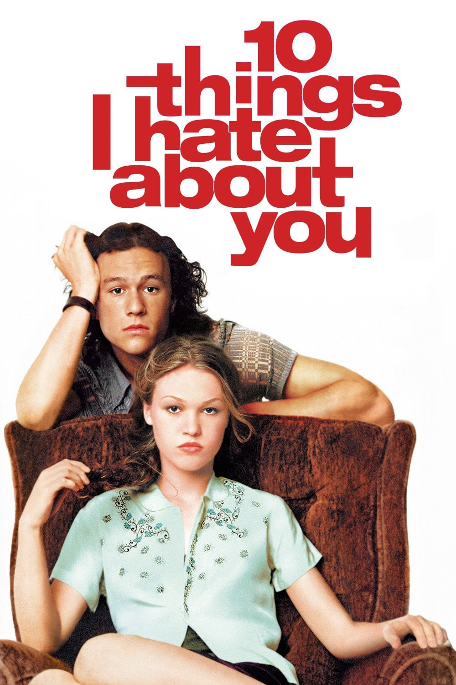
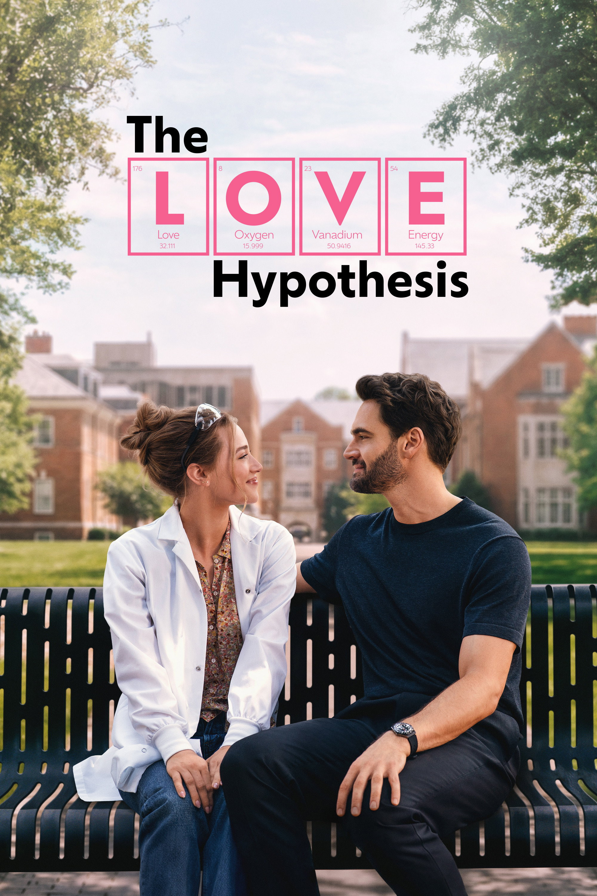
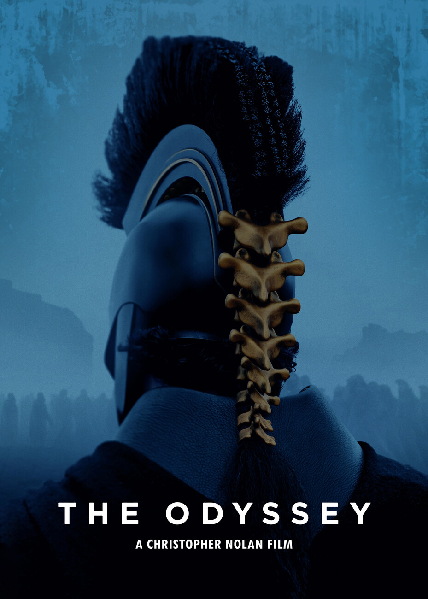
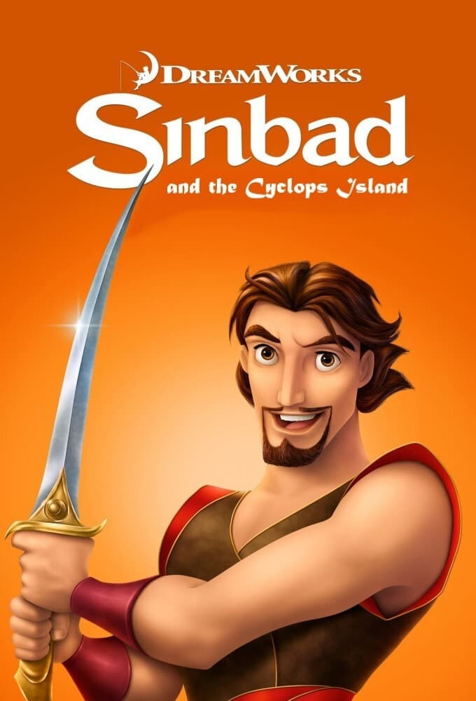

10 Things I Hate About You (1999)

Rezyser: Gil Junger
Moja ocena: 5/5
Moja opinia: A wonderful rewatch. Obejrzałam film z Manią kilka dni przed jej wyjazdem do Warszawy jako lekki odmódzacz. Uwielbiam głównych bohaterów, choć teraz z perspektywy czasu, Kat jest zapatrzona w siebie i swoje problemy co widać na zajęciach z angielskiego, gdy nauczyciel podkreśla, ze Kat zauwaza problemy kobiet i sprawy związane z feminizmem, ale nie sytaucje ludzi czarnoskórych. Patrick jest oczywiście debilem i przyjmuje kasę, ale wiemy ze ją kocha, więc mu przebaczamy. Moze byłaby minimalnie lepsze gdyby na koniec dodać troszkę grovelingu. Oprócz tego 5/5.
The Love Hypothesis (2026)

Rezyser: Claire Scanlon
Moja ocena: 3/5
Moja opinia:
The Early Spring (早春晴朗) (2026)
Rezyser: Chi-Cheng Chian
Moja ocena: 4.2/5
Moja opinia:
Odyseja (2026)

Rezyser: Christopher Nolan
Moja ocena: 4.3/5
Moja opinia: Niestety nie mogę powiedzieć że obejrzałam cały seans od początku do końca, gdyż lekko spóźniłyśmy się z dziewczynami na rozpoczęcie, jednak film wciąż bardzo mi się podobał . Muzyka była naprwdę dobrze dobrana, pomimo tego że była puszczana bardzo głośno. Potwory w filmie (cyklop, przemiana zwięrząt przez Kirke) była zrobiona bardzo naturalistycznie i przerażająco realistycznie. Dodatkowo często podkreślana brutalność i złamane na samym początku przez Odyseusza Prawo Zeusa daje dużo do myślenia, jeżeli chodzi o podejście do drugiego człowieka. Film pokazał jak szybko strata zaufania do obcej osoby przełożyła się na szybko rozwijający się chaos i brutalność na świecie. Na pewno musze sięgnąć po książkę i spróbować przez nią przebrnąć, ale bardzo podobał mi się ten filozoficzny aspekt analizy relacji międzyludzkich i zaufania.
Sinbad and the Cyclops Island (2003)

Rezyser: Patrick Gilmore
Moja ocena: 3.8/5
Moja opinia: